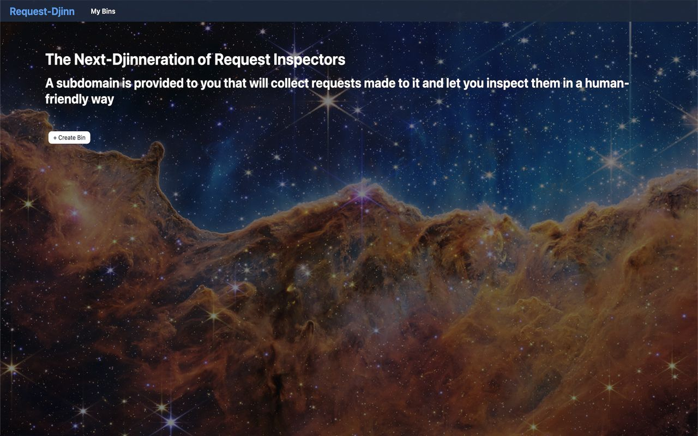
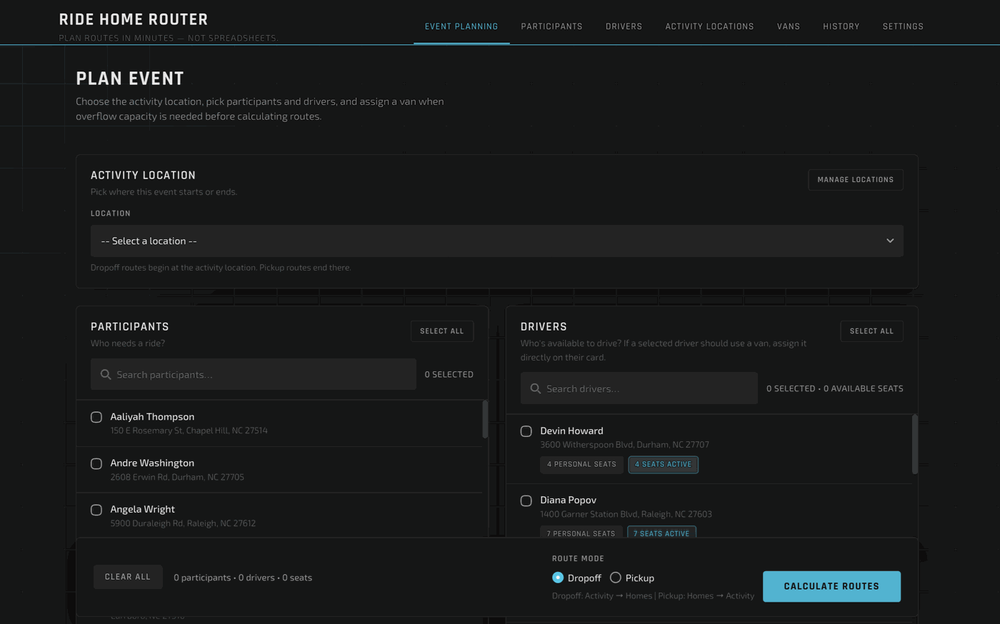
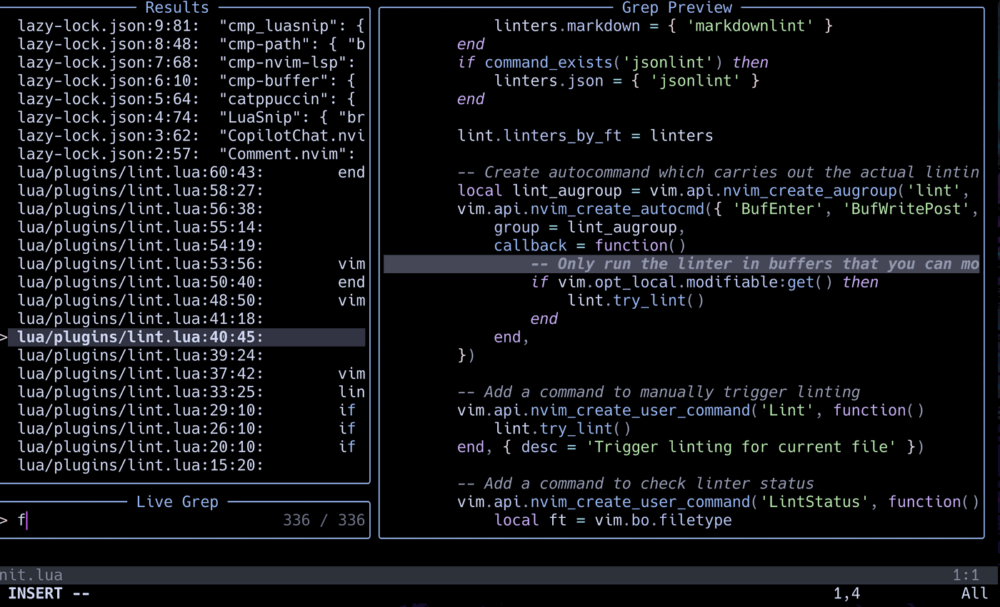

Request-Djinn
An HTTP webhook inspector created using Express.js, React.js, Node.js, MongoDB & PostgreSQL and deployed to a Digital Ocean Droplet.
Applied AI Engineer building and deploying LLM
and AI Agent infrastructure focused on fine-tuning, inference, serving,
RAG, orchestration, and evals, along with the backend systems and CI/CD
pipelines that run these models in production. Software Engineer at the
core, with production backend experience in Go, Python, TypeScript, AWS,
Docker, and Infrastructure as Code.
Led development of core components for
Triage, an open-source Kafka proxy
addressing head-of-line blocking issues.
Triage is an open-source consumer proxy for Apache Kafka that solves head-of-line blocking caused by poison pill messages and non-uniform consumer latency. Once deployed, poison pill messages are identified and delivered to a dead letter store. By enabling additional consumer instances to consume messages, Triage uses parallelism to ensure that an unusually slow message will not block the queue.
The goal of Triage was to create a service that deals with head-of-line blocking in a message queue, while making it easy for consumer application developers to maintain their existing workflow.

An HTTP webhook inspector created using Express.js, React.js, Node.js, MongoDB & PostgreSQL and deployed to a Digital Ocean Droplet.

Tackles real-world vehicle routing: a multi-phase algorithm assigns passengers, optimizes stop order, and balances workloads across drivers. One-click Google Maps export means drivers just follow the link. Built with Go & HTMX, actively used by nonprofit organizations to coordinate rides.

Meticulously crafted development environment featuring Neovim and Tmux that enhances productivity through custom linting, autocompletion, and keybindings. Designed to create the perfect flow state for problem-solving.